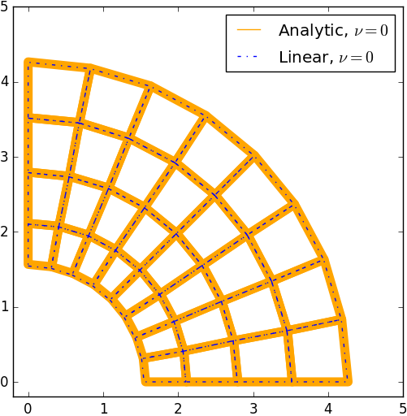
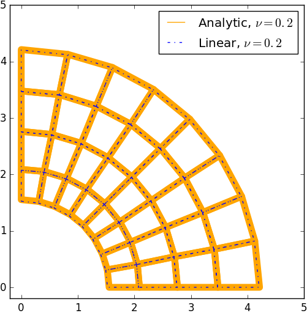
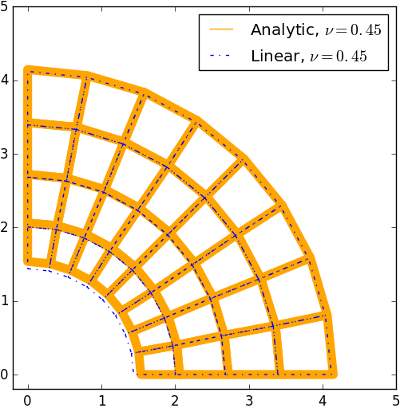
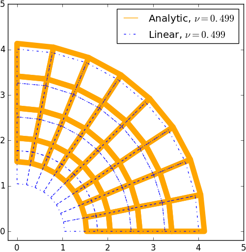

6.1. Volume Locking¶
References
6.1.1. Overview¶
Consider the thick-wall cylinder with internal radius \(r_1\) and external radius of \(r_2\) shown.
For a cylinder loaded by an internal pressure \(p\) and having no end caps, the deformation can be approximated as plane strain. If the cylinder is fabricated from a linear elastic material with Young’s modulus \(E\) and Poisson’s ratio \(\nu\), the displacement at any point in the cylinder, as a function of the radius \(r\) is
The images below show comparisons of the analytical solution to the finite element solution with a mesh of four-node bilinear plane strain quadralateral elements for \(\nu=0,.2,.45,.499\).
|  |  |
|  |  |
Clearly, the finite element solution diverges from the analytical solution as \(\nu\rightarrow.5\). This phenomenon is known as “volumetric locking”.
Volumetric locking occurs because the finite element interpolation functions are unable to properly approximate a volume preserving strain field. The interpolation functions can make the volumetric strain vanish at some, but not all, of the integration points in an element. In the incompressible limit (\(\nu\rightarrow .5\))
- a nonzero volumetric strain at any of the integration points will give rise to a very large contribution to the element energy; and
- the finite element displacements will tend to zero.
6.1.2. Overcoming volumetric locking¶
Volumetric locking:
- cannot be avoided by refining the mesh;
- occurs in all standard fully integrated finite elements in the incompressible limit; and
- occurs in some elements for Poisson’s ratios as small as 0.45.
Fortunately, most materials have Poisson’s ratios around 0.3 or less, so the standard elements can be used for most linear elasticity and small-strain plasticity problems.
To model incompressible (or nearly incompressible) materials, such as rubbers, or to solve problems involving large plastic strains, elements must be redesigned to avoid volumetric locking. The most commonly adopted approaches are all variants of the concept of “reduced integration” elements. The idea behind reduced integration elements is simple: integrate the element stiffness using fewer Gauss points than the standard method (typically one order less accurate). In addition to the advantage of improving computational costs (fewer integration points to evaluate/store data), reducing the number of integration points improves the ability of an element to meet the volume strain constraint imposed by incompressible materials. The following reduced integration schemes can be used to reduce, or even eliminate, volumetric locking: